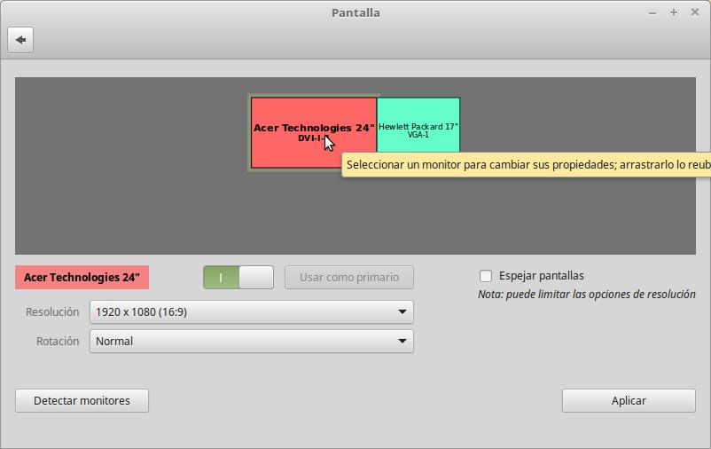

Escritorio extendido en Linux Mint.
Según el uso que vayamos a hacer puede ser que nos resulte útil trabajar con un escritorio extendido en varios monitores.
Para ello, necesitamos que el equipo que estamos empleando tenga varias salidas diferentes de señal de vídeo.
Si quieres habilitar el escritorio extendido, conecta los dos monitores a tu ordenador, abre la configuración del sistema y selecciona "Pantalla.
,
Se abrirá un menú donde podrás gestionar tus monitores (su posición, resolución, su rol como primario o secundario o incluso espejar pantallas (para proyectar).